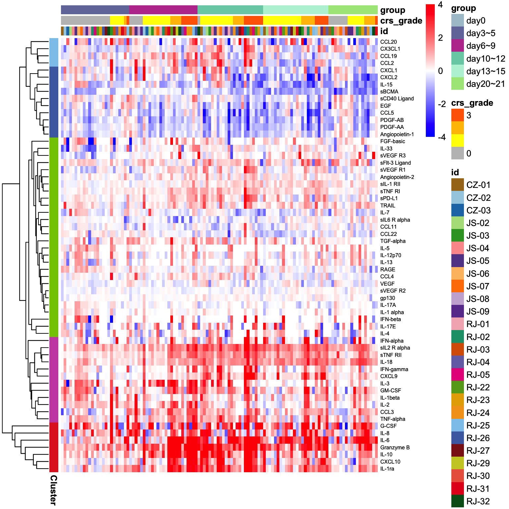
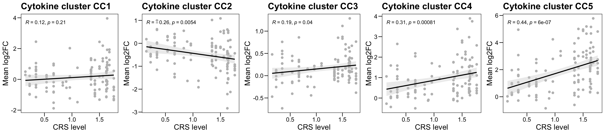

Chapter 2 Cytokine profiles
2.1 Load packages
suppressMessages({
library(dplyr)
library(pheatmap)
library(ggplot2)
library(DESeq2)
library(openxlsx)
library(dendextend)
library(matrixStats)
library(ggpubr)
library(limma)
library(randomForest)
library(clusterProfiler)
library(genefilter)
library(GSVA)
library(Biobase)
library(ggplot2)
library(ggthemes)
library(enrichplot)
library(GSEABase)
library(Seurat)
library(monocle)
})2.2 Data preprocessing
cytokine.raw <- read.xlsx("data/Fig1-luminex-rawdata.xlsx", sheet = 2, rowNames = T)
cytokine.meta <- read.xlsx("data/protein.meta.xlsx", sheet = 1, rowNames = F)
cytokine.anno <- read.xlsx("data/protein.meta.xlsx", sheet = 2, rowNames = F)
rownames(cytokine.meta) <- cytokine.meta$lum_num
cytokine.meta$lum_num[!cytokine.meta$lum_num %in% colnames(cytokine.raw)]## character(0)2.3 Visualization
color.sample <- c("#A6761D", "#A6CEE3", "#1F78B4", "#B2DF8A", "#33A02C", "#FB9A99",
"#634795", "#FDBF6F", "#FF7F00", "#CAB2D6", "#6A3D9A", "#F4B3BE",
"#1B9E77", "#D95F02", "#7570B3", "#E7298A", "#66A61E", "#E6AB02",
"#F4A11D", "#8DC8ED", "#4C6CB0", "#8A1C1B", "#CBCC2B", "#EA644C",
"#E31A1C", "#005B1D")
names(color.sample) <- unique(cytokine.meta$id)
color.day <- c(`day0` = "#abc4d1", `day3~5` = "#7278A9", `day6~9` = "#BC3D9B",
`day10~12` = "#78CEB3", `day13~15` = "#B9F1D9", `day20~21` = "#AAE689")
color.crs <- c(`0` = "#BFBFBF", `1` = "#FFFF00", `2` = "#FFC000", `3` = "#FF6600", `4` = "#C00000", `5` = "#000000")
color.cluster <- c(C1 = "#8DC8ED", C2 = "#4C6CB0", C3 = "#82C800", C4 = "#CB50B2", C5 = "#E22826")
anno.color <- list(id = color.sample,crs_grade = color.crs[1:4], group = color.day, Cluster = color.cluster )
my.breaks <- c(seq(-4, -0.01, by = 0.001), seq(0.01, 4, by = 0.001) )
my.colors <- c(colorRampPalette(colors = c("blue","white"))(length(my.breaks)/2),
colorRampPalette(colors = c("white","red"))(length(my.breaks)/2))
plot.mat <- log2(cytokine.mat[, cytokine.meta$lum_num]) - log2(cytokine.mat[, cytokine.meta$Diff])
plot.mat <- plot.mat[, 27:142]
anno.data.col <- cytokine.meta[, c("id","crs_grade","group")]
anno.data.row <- data.frame(row.names = cytokine.anno$Protein, Cluster = cytokine.anno$Cluster)
p <- pheatmap(plot.mat, scale = "none",
color = my.colors, breaks = my.breaks,
cluster_row = T, cluster_col = F, border_color = NA,
annotation_col = anno.data.col,
annotation_row = anno.data.row,
annotation_colors = anno.color,
fontsize_col = 0.1,
fontsize_row = 6)
p
2.4 Correlation
plot.mat <- log2(cytokine.mat[, cytokine.meta$lum_num]) - log2(cytokine.mat[, cytokine.meta$Diff])
plot.data <- cytokine.meta
plot.data$Cytokine_C0 <- colMeans(plot.mat[, plot.data$lum_num])
plot.data$Cytokine_C1 <- colMeans(plot.mat[cytokine.anno$Protein[which(cytokine.anno$Cluster == "C1")], plot.data$lum_num])
plot.data$Cytokine_C2 <- colMeans(plot.mat[cytokine.anno$Protein[which(cytokine.anno$Cluster == "C2")], plot.data$lum_num])
plot.data$Cytokine_C3 <- colMeans(plot.mat[cytokine.anno$Protein[which(cytokine.anno$Cluster == "C3")], plot.data$lum_num])
plot.data$Cytokine_C4 <- colMeans(plot.mat[cytokine.anno$Protein[which(cytokine.anno$Cluster == "C4")], plot.data$lum_num])
plot.data$Cytokine_C5 <- colMeans(plot.mat[cytokine.anno$Protein[which(cytokine.anno$Cluster == "C5")], plot.data$lum_num])
plot.list <- list()
for (i in 1:5) {
plot.data.sub <- plot.data[which(plot.data$group != "day0"), ]
p <- ggscatter(plot.data.sub, x = "mean_crs_grade", y = paste0("Cytokine_C", i),
color = "gray", #palette = color.group,
main = paste0("Cytokine cluster CC", i),
xlab = "CRS level", ylab = "Mean log2FC",
add.params = list(color = "black", fill = "lightgray"),
conf.int = TRUE, add = "reg.line") + theme_base() +
stat_cor(method = "pearson")
p <- p + theme_base()
p <- p + theme(plot.background = element_blank())
plot.list <- c(plot.list, list(p = p) )
}
p <- ggarrange(plot.list[[1]], plot.list[[2]], plot.list[[3]], plot.list[[4]], plot.list[[5]], ncol = 5, nrow = 1 )## `geom_smooth()` using formula = 'y ~ x'
## `geom_smooth()` using formula = 'y ~ x'
## `geom_smooth()` using formula = 'y ~ x'
## `geom_smooth()` using formula = 'y ~ x'
## `geom_smooth()` using formula = 'y ~ x'